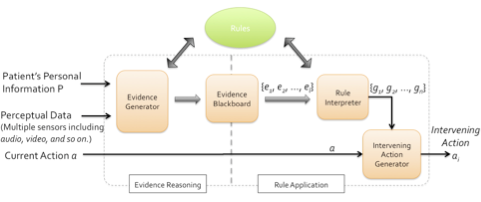

Intervening Ethical Governor
A robot mediator in patient-caregiver relationship
Today, more than 10 million people suffer from Parkinson’s disease (PD) worldwide and around 1 million Americans have been diagnosed with PD. Robotic technologies have been developed and are used to help PD patients and caregivers. However, most technologies to date are focused on the benefits related to PD patients’ physical rehabilitation. For example, by using robotic training, PD patients can prevent or delay their loss of motor control.
Distinct from previous research, we focus on the role of robots in improving the quality of people’s interactions and relationships with each other. For example, therapeutic robots are widely used to help children with autism in their social development. We aim to improve the quality of PD patients’ everyday life and their relationship with their caregivers by using robotic technologies.
When interacting with caregivers, patients with PD experience challenges due to declining control over their musculature. In particular, since patients experience the loss of control of their facial muscles, they frequently cannot express their emotions or nuances in their faces. As a result, PD patients often can have blank expressions when they are interacting with other people (facial masking). Facial expression is one of the essential cues in conveying people’s emotions and feelings in human-to-human communication. Therefore, PD patients’ facial masking can cause caregivers to misunderstand patients during their interactions. For this reason, the quality of PD patients and caregivers’ relationships can worsen, and as a result, stigmatization between a caregiver and a patient can arise.
To assist in remedying this problem, a robot mediator can be used to assist in the relationship between PD patients and their caregivers. In this five-year, NSF-funded study (a collaborative interdisciplinary effort with Tufts University), we develop a robot mediator that can reduce the communication gap and uphold the dignity of early-stage PD patients that exhibit expressive masks during stigmatizing interactions with their caregivers.
The robot mediator’s architecture consists of two new components, which are the ethical adaptor and the intervening ethical governor. The ethical adaptor models the relationship between the patient and caregiver and uses this model to recognize stigmatization by recognizing discordance between their moral emotional states. An ethical adaptor model has been proposed and developed in our lab and has been presented elsewhere. In particular, indignity arises when a patient experiences shame or embarrassment but the caregiver cannot respond with a sufficient level of empathy. In the ethical adaptor model, a robot mediator detects these gaps between the patient’s shame and the caregiver’s empathy and generates an appropriate robot action using kinesic nonverbal cues.
The second part of the robot mediator’s architecture is the intervening ethical governor (IEG), which can be used in more extreme situations. Stigmatization is highly related to ethical issues, and the maintenance of dignity is essential in our development of a robot mediator. For this purpose, we developed the IEG model that enables a robot to observe whether patients or caregivers crossed accepted ethical boundaries. When any one of a set of ethical rules is broken, the robotic intermediary intervenes with both nonverbal and verbal responses in an effort to restore a normal patient-caregiver relationship. The model for the IEG and its architecture were presented in earlier research that enables a robot to ethically intervene.

IEG is a component of a robot architecture that enables a robot to determine how and when to intervene if unacceptable human-to-human interaction boundaries are crossed. As illustrated in Figure 1, perceptual data and previous case knowledge about the patient and the caregiver are encoded and then recalled by the evidence reasoning model. By sharing this information with the rule application module, it is determined whether any of the rules encoding the acceptable social norms have been broken. Once any rule violations have been triggered, the intervening ethical governor generates the appropriate corresponding intervention action, so the robot mediator can promptly intervene in the patient-caregiver relationship. In this paper, we present the implementation details, based on the previous IEG model. By applying this model to a humanoid robot, we simulate multiple intervention situations and confirm the application of the interventions at the right time and in the right manner. As an evaluation method, we recorded intervention interactions and ran a formal interview study, where we presented the simulation videos to our target population (people who are aged 60 years or older) and asked questions with respect to the robots actions and the appropriateness of its responses. Based on the interview results, we evaluated the IEG model and obtained feedback on how to improve the current intervention rules and behaviors for further trials.
Publications
- Jaeeun Shim, Ronald C. Arkin and Michael Pettinati, 2017. "An Intervening Ethical Governor for a robot mediator in patient-caregiver relationship: Implementation and Evaluation'', Proc. ICRA 2017, Singapore, May 2017.[pdf]
- Jaeeun Shim and Ronald C. Arkin, "An Intervening Ethical Governor for a Robot Mediator in Patient-Caregiver Relationships", International Conference on Robot Ethics (ICRE 2015), Lisbon, PT, Oct. 2015.[pdf]